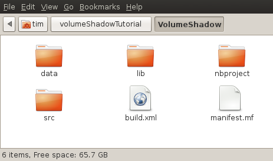
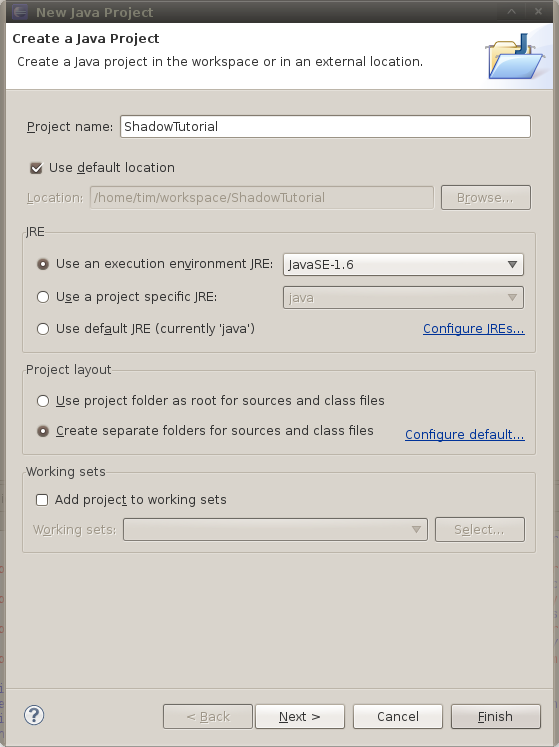

This is the tutorial that will show you how to work with the VolumeShadow library. It will lead you step by stop from obtaining the source to a fully functional scene with shadow. If you already have a working OpenGl project and know how to use librarys you can easily skip some sections. I describe how to create a new Eclipse project with JOGL, so that there is a common OpenGl application running. So you can be sure that if it won't work, the error was not caused by wrong project setup (this happens soooo many times). Also if you have some questions please feel free to contact me.
This tutorial will not show you how to setup JOGL. The JOGL library for compiling the example scene are included in the download, but you still need the native files for your system. You can get them at the official JOGL homepage. But as this a library to include to your existing OpenGl application, you have probably already installed JOGL.
The whole project is currently hosted at github. This gives us three different ways to obtain the library.
The recommended way to obtain the project is to clone the repository. To do this you will have to install GIT. After you have done this, create a local directory and got into it. Run the following command from within a terminal to clone the repository: git clone http://github.com/iuiz/VolumeShadow.git . (with the dot).
If you don't want to use GIT you can also use SVN. Create a local folder, switch into it and run the following command to checkout the latest version of the project with SVN: svn checkout http://svn.github.com/iuiz/VolumeShadow.git
The last way to download the project is to use one of the two direct download links. You can choose between a ZIP or a TAR archive. Just extract the archive to a folder on your harddrive.
There are already two project files included. One for Eclipse, one for Netbeans. They will let you compile an example project, but this tutorial aims to show you how to integrate the VolumeShadow lib into your own project, so I will show you how to create your own projcect in Eclipse.
After you start Eclipse go to File -> New -> JavaProject and enter a name for your project. I choose "ShadowTutorial" for my project. Look at the screenshot to see the other settings (click to enlarge it). Click finish to create your new project.
After you have done this, create a new JavaClass in the project (right click the project and select New -> Class, name it Main and put it into the package shadowTutorial. Pass the folowing code into the class:
package shadowTutorial;
import java.awt.Frame;
import java.awt.event.WindowAdapter;
import java.awt.event.WindowEvent;
import javax.media.opengl.GL;
import javax.media.opengl.GLAutoDrawable;
import javax.media.opengl.GLCanvas;
import javax.media.opengl.GLCapabilities;
import javax.media.opengl.GLEventListener;
import javax.media.opengl.glu.GLU;
import com.sun.opengl.util.Animator;
import com.sun.opengl.util.GLUT;
public class Main implements GLEventListener {
GL gl;
GLU glu = new GLU();
GLUT glut = new GLUT();
public static void main(String[] args) {
Frame frame = new Frame("Volume Shadow");
GLCapabilities capabilities = new GLCapabilities();
capabilities.setStencilBits(8);
GLCanvas canvas = new GLCanvas(capabilities);
canvas.addGLEventListener(new Main());
frame.add(canvas);
frame.setSize(1024, 768);
final Animator animator = new Animator(canvas);
frame.addWindowListener(new WindowAdapter() {
@Override
public void windowClosing(WindowEvent e) {
// Run this on another thread than the AWT event queue to
// make sure the call to Animator.stop() completes before
// exiting
new Thread(new Runnable() {
public void run() {
animator.stop();
System.exit(0);
}
}).start();
}
});
// Center frame
frame.setLocationRelativeTo(null);
frame.setVisible(true);
animator.start();
}
public void reshape(GLAutoDrawable drawable, int x, int y, int width,
int height) {
GL gl = drawable.getGL();
if (height <= 0) { // avoid a divide by zero error
height = 1;
}
final float h = (float) width / (float) height;
gl.glViewport(0, 0, width, height);
gl.glMatrixMode(GL.GL_PROJECTION);
gl.glLoadIdentity();
glu.gluPerspective(45.0f, h, 0.1f, 5000.0);
gl.glMatrixMode(GL.GL_MODELVIEW);
gl.glLoadIdentity();
}
public void displayChanged(GLAutoDrawable drawable, boolean modeChanged,
boolean deviceChanged) {
System.out.println("display changed");
}
public void init(GLAutoDrawable gLAutoDrawable) {
this.gl = gLAutoDrawable.getGL();
gl = gLAutoDrawable.getGL();
// Setup the drawing area and shading mode
gl.glEnable(GL.GL_CULL_FACE);
//gl.glDisable(GL.GL_CULL_FACE);
gl.glCullFace(GL.GL_BACK);
gl.glFrontFace(GL.GL_CCW);
gl.glShadeModel(GL.GL_SMOOTH);
gl.glClearColor(0.3f, 0.3f, 0.5f, 1.0f);
gl.glClearDepth(1.0f);
gl.glEnable(GL.GL_DEPTH_TEST);
gl.glDepthFunc(GL.GL_LEQUAL);
gl.glHint(GL.GL_PERSPECTIVE_CORRECTION_HINT, GL.GL_NICEST);
gl.glEnable(GL.GL_TEXTURE_2D);
gl.setSwapInterval(1);
}
@Override
public void display(GLAutoDrawable arg0) {
gl.glClear(GL.GL_COLOR_BUFFER_BIT | GL.GL_DEPTH_BUFFER_BIT);
gl.glLoadIdentity();
}
}
This is the example OpenGl programm we are gonna use. It just creates an empty window with an OpenGl canvas. We still have to add the JOGl libs to the project. To do this rightclick on the project and select Properties. Then select Java Build Path and click on Add External JARs.... Now go to the lib directory in your VolumeShadow path (where you downloaded or extracted the lib) and select gluegen-rt.jar and jogl.jar. Afterwards click on OK.
Now you still need to add VolumeShadow lib. This is currently not deliverd as an jar, so you will have to select the Source tab and click on Link Source.... Select the VolumeShadow/src, change the folder name to VolumeShadow and confirm the dialog. (I will add a downloadable jar in the future, so this will be a lot easier).
You should now be able to compile the application and use the VolumeShadow lib.
The next part of the tutorial will show you how to actually use the lib in your source code. Continue to part 2...
{kind=link}
{kind=link}